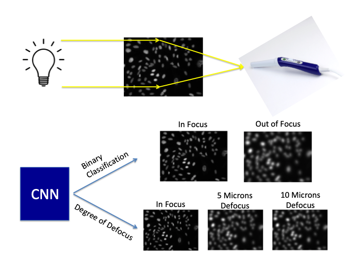

| Paper PDF |

|
The goal of this project is to develop an algorithm that can detect whether acquired images are in-focus with the hope that this technology could provide real-time feedback to healthcare workers to ensure the collection of high quality diagnostic images. Images of osteosarcoma cells acquired at various degrees of focus were used to train this network to discriminate between focused and blurred images. Since acquired images are often very large, one goal of this network was to be able to operate with large images. After optimizing the number of parameters, the activation, and the number of parameters, the network was able to perform a binary classification of in focus and out of focus images with 98% accuracy. Additionally, the network was able to achieve 97.5% accuracy in classifying different levels of defocus. In order to reduce the number of convolutional operations necessary for classification, we explored optimizing the aperture of the imaging system. We found that a larger aperture acting as a high pass filter, with an optimized phase plate could overcome a smaller network and achieve 99% accuracy.
| |
|
| |
Paper:
Code Description:
|
Code and Data:
|
|